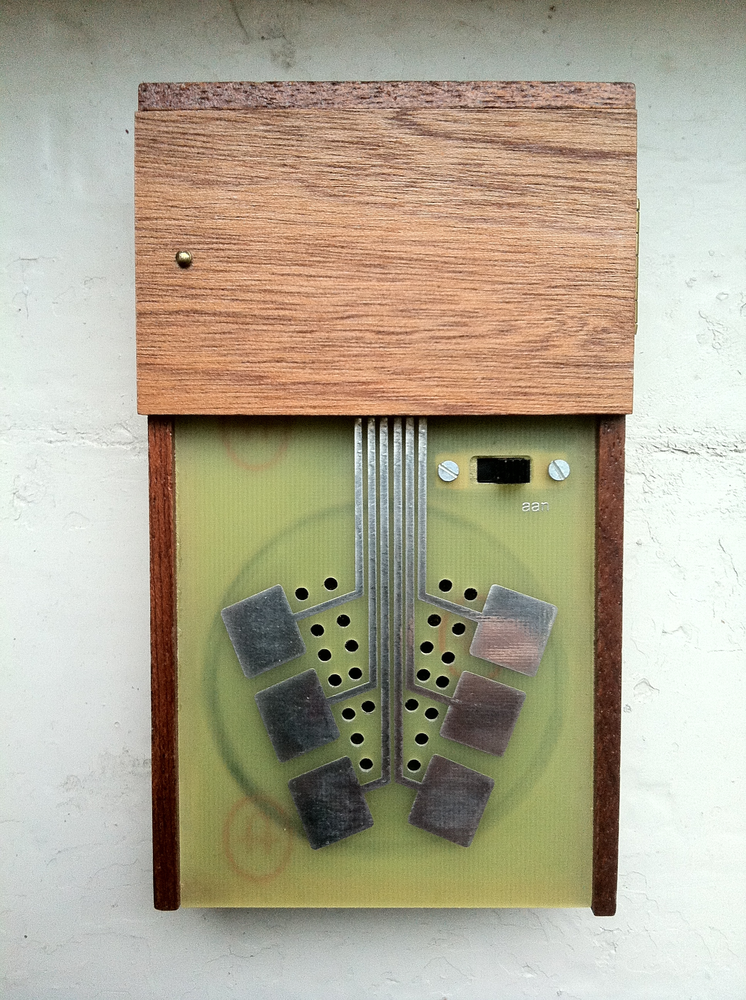

The Instrument That Made You the Circuit
A wooden box with six metal contacts and a bare op-amp. Touch the contacts and your body becomes part of the circuit — skin conductivity determines the sound. This is the Cracklebox.
Near the end of the 1970s, the Dutch composer Michel Waisvisz sat down in Amsterdam with an LM709 operational amplifier — one of the earliest integrated circuit op-amps ever mass-produced, intentionally unstable, prone to oscillating unpredictably — and wired it directly to six metal contacts on a wooden box. No enclosure. No protective cover. No mediation between the performer and the bare electronics.
When you touch those contacts, your body completes the circuit. Your skin's conductivity becomes a variable resistor and capacitor in the op-amp's feedback loop. The amplifier, already unstable, now changes its oscillating behavior based on how you touch — how moist your fingertips are, how hard you press, even which fingers you use. The result is amplified through a small speaker: crackles, squelches, shrieks, pops, and tones that sound less like a musical instrument and more like a machine discovering it has a voice.
Different people produce different sounds from the same box. The same person sounds different depending on the weather.

Waisvisz called it the Kraakdoos — Dutch for "crackle box." In English, the Cracklebox. It debuted in 1978, the same year the Speak & Spell shipped its millionth unit and the museum's own 2-XL was teaching children through 8-track tape branching. But the Cracklebox belonged to a different philosophy entirely. Where those machines packaged semiconductor intelligence into friendly plastic cases, the Cracklebox stripped everything away until the only interface left was your skin against bare metal.
Waisvisz described the Cracklebox as an instrument where "the interface is the content." This is not a metaphor. The interface is six pieces of metal connected to an unshielded op-amp. There is nothing else. The playing technique is not about learning scales or memorizing key positions — it is about developing a tactile sensitivity to how the circuit responds to your body. Waisvisz called it a "tactile and sonic dialogue." You touch the box. The box changes. You feel the change and touch it differently. The loop runs at the speed of skin.
The Cracklebox was never sold in stores. STEIM (Studio for Electro-Instrumental Music), where Waisvisz served as artistic director from 1981, published the schematic and encouraged musicians to build their own. It became one of the foundational artifacts of circuit bending — the practice of creatively short-circuiting consumer electronics to produce unexpected sounds — and it anticipates, in its radical simplicity, everything from the Make: movement to the bare-metal tactility of modular synthesis. A battery, an LM709, six contacts, a speaker. Anyone with a soldering iron could build one.
Geert Hamelberg had originated the concept in the 1960s, but Waisvisz and his colleagues at STEIM — Peter Beyls, Nico Bes — turned it into something performable, documented on the 1978 LP Crackle. A small, crackling vinyl record that captured what happens when you give a roomful of composers a box that treats human skin as a variable resistor.
The Cracklebox lives in the museum now. It is not the most practical interface in the collection. It is not the most commercial — it was never either. But it is arguably the most direct. A circuit that has no boundary between machine and performer because the performer is the missing component. Touch the metal. Become the wire.
— Beepy